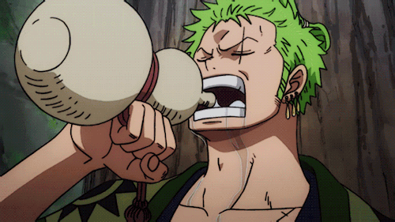

Sobre Zoro
Roronoa Zoro es un Ronin (espadachin) tripulante de la banda de piratas de Monkey D. Luffy, se le conoce por usar la tecnica de las 3 espadas. Por largo tiempo fue un casa recompensas pero ahora es un pirata hecho y derecho.

-"Zoro y sus espadas malditas".-
Caracteristicas de Zoro
- Adora el sake
- Ha entrenado con la espada toda su vida
- Su tecnica con la espada consiste en tener una en cada mano y otra en su boca!
- Es un tipo serio pero muy consciente
- Nunca desobedecería a su capitan
- Su pasion es el poder enfrentarse a tipos mas fuertes que el y vencerlos
Sus Nakama!
Nakama quiere decir miembros de la tripulación, desde su capitan hasta sus compañerxs hay personas muy interesantes, poderosas y extrañas en su manera de ser.
Todos ellos con un gran carisma y convicciones firmes!
Puedes hacer click en los links de abajo para saber mas sobre ellos: